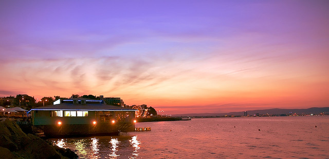
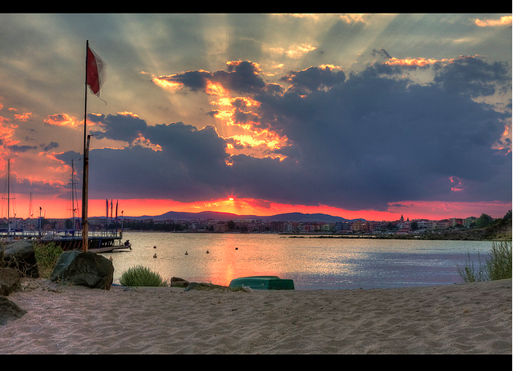
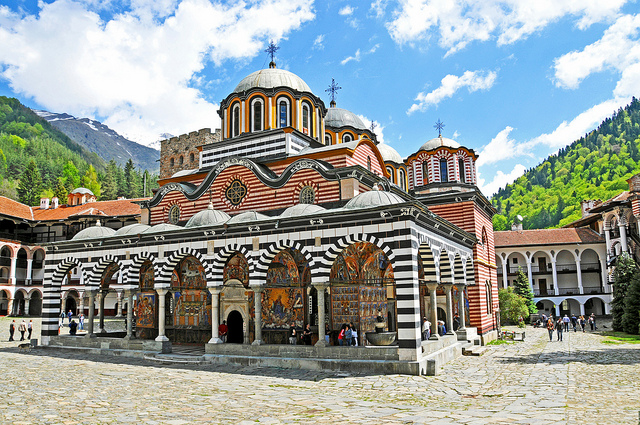

3 of the most beautiful places to visit in Bulgaria !

3 of the most beautiful places to visit in Bulgaria – I think it’s quite amazing that Bulgaria is still considered to be off the beaten track for Western tourists, because the country has a bit of everything, and all at very affordable prices.

A good place to start is the country’s famous coastline. Bulgaria is known for its Black Sea coastline which has long stretches of sandy beaches dotted with hotels, traditional fishing villages and historical sites. Tourists flock to the glitzier resorts of Sunny Beach and Golden Sands, but I personally believe the city beaches in Varna and Burgas are just as beautiful.

Known as the Jerusalem of Bulgaria, this picturesque Eastern Orthodox monastery in the forested mountains less than two hours south of Sofia is definitely worth a pilgrimage visit. Named for St. Ivan of Rilski, a tenth century hermit who lived in a nearby cave, the monastery has been built, burnt, and rebuilt over the centuries, with the latest construction dating to the 1800s.